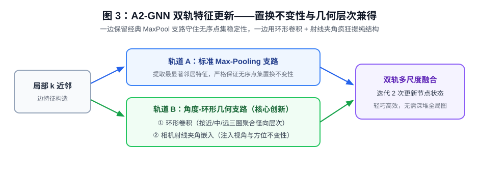

【学习笔记】A2-GNN：基于角度-环形图神经网络的无描述子视觉重定位
前言与背景
在做视觉重定位（Visual Localization，也就是给一张新拍的 2D 照片，算出相机在已知 3D 场景中的 6 自由度位置和朝向）时，最经典的流水线叫“基于结构的定位（Structure-Based Localization）”：先靠图像检索缩小地图范围，再建立 2D 关键点和 3D 点云之间的对应关系，最后丢给 PnP-RANSAC 算出相机位姿。
在这条流水线上，传统的有描述子方法（Descriptor-Based，比如 SuperPoint + SuperGlue）精度最高，但落地时有三个非常头疼的包袱：
- 存储爆炸：每个 3D 点都得存一条高维视觉描述子（比如 256 维浮点向量），动辄几个 GB 甚至几十 GB（在 7Scenes 上，SuperPoint + SuperGlue 要占掉 22,977 MB 空间）；
- 隐私隐患：已有研究表明，只要截获这些视觉描述子，攻击者就能用逆向网络把原始场景图像大致还原出来，在云端/跨设备传输时非常危险；
- 地图维护难：以后如果换了新版本的特征提取器，或者往老地图里增量融合新点云，不同版本的描述子互相不兼容，维护成本极高。
为了甩掉视觉描述子这个大包袱，研究者们开辟了**无描述子 2D-3D 直接匹配（Visual Descriptor-free Matching）**这条路线——地图里压根不存描述子，只存点云的几何坐标（外加轻量的 RGB 颜色）。如果你顺着我们在 无描述子 2D-3D 匹配专题总览 里梳理的演进脉络往下看，会发现这条路线正处于“既想准、又想快”的攻坚期：
- BPnPNet（ECCV 2020）：率先提出用方位向量（Bearing Vector）统一 2D 和 3D 的模态，在无离群点的理想条件下跑通了端到端匹配；
- GoMatch（ECCV 2022）：引入 SuperGlue 风格的图神经网络（GNN）和 PointCN 离群点剔除模块，速度很快（MegaDepth 单检索图仅 24.4 ms），但只靠简单最大池化（Max-pooling）聚合局部几何，精度和有描述子方法差距仍然很大；
- DGC-GNN（CVPR 2024）：补上了 RGB 颜色、更多几何线索，还设计了“全局到局部（Global-to-Local）”的多级点聚类来加强上下文建模，精度大幅拉近；但代价也很惨重——反复执行点聚类让它的推理耗时飙升到 GoMatch 的 3 倍左右（单检索图要 77.8 ms，Top-10 检索更是高达 701.9 ms）。
今天我们精读的 A2-GNN（全称 A2-GNN: Angle-Annular GNN for Visual Descriptor-free Camera Relocalization，作者为芬兰阿尔托大学与奥卢大学的 Yejun Zhang、Shuzhe Wang、Juho Kannala，2025 年 2 月发表于 arXiv:2502.20036，官方代码仓库为 https://github.com/YejunZhang/a2-gnn），正是瞄准了 “GoMatch 太糙、DGC-GNN 太慢” 这对矛盾切入的。
用一句话概括 A2-GNN 的破局思路：它抛弃了耗时的全局反复聚类，只在每个点的局部 近邻图上，用轻量的“角度-环形卷积（Angle-Annular Convolution）”同时榨干“近/中/远距离层次结构”和“相机射线夹角”两种几何线索；同时把离群点剔除模块的输入从混杂的高维特征改回纯粹的方位向量，最终在精度全面超越 DGC-GNN 的前提下，把推理速度直接提快了 2.2 倍。
下面我们就顺着原论文的脉络，把整套架构、每一个公式、训练细节和实验数据彻底拆开讲透。
1. 整体架构图解
动手抠数学公式之前，我们先看一眼 A2-GNN 的端到端全景图，把数据流从头到尾走通。

可以看到，整个网络非常清爽，没有复杂的全局聚类模块，也没有任何描述子提取网络，核心就是前后串联的 5 个步骤：
- 统一输入表征（模态对齐）：拿一张 2D 查询图像提取出的 个关键点，和图像检索（Image Retrieval）找出来的 Top- 参考图像对应的 个 3D 地图点。我们先把 2D 像素坐标 用相机内参消掉畸变/焦距影响，再把 3D 世界坐标用检索库的已知相机位姿投影到归一化的 相机平面上。这样一来，2D 点和 3D 点就都变成了二维的方位向量（Bearing Vector，简称 BV），外加各自自带的 RGB 颜色。
- 双分支特征编码（Feature Encoder）：用一套共享权重的 ResNet 风格轻量编码器，分别把方位向量和 RGB 颜色映射到 维特征空间，再直接相加，得到 2D 初始点特征 和 3D 初始点特征 （这一步仅耗时约 2 ms）。
- A2-GNN 几何增强（Self + Cross Attention）：这是整篇论文的“心脏”。先在 2D 和 3D 各自内部建局部 近邻图（）做自注意力——同时跑 Max-pooling 和角度-环形卷积（Angle-Annular Convolution）两条支路，迭代更新两次后融合，赋予每个点极强的局部几何区分度；接着做 2D 与 3D 之间的全连接交叉注意力（Cross-Attention），跨模态交换上下文信息（这一步合计约 14 ms）。
- 最优传输匹配（Optimal Transport）：拿着 GNN 增强后的特征，计算所有 2D 点和 3D 点两两之间的 距离代价矩阵，拼上处理“未匹配点”的垃圾桶（Dustbin）行列，跑可微 Sinkhorn 算法求解软分配矩阵，最后去掉垃圾桶并做互近邻检查（Mutual Nearest Neighbor），拿到 对初始候选匹配 （约 9 ms）。
- 纯方位向量离群点剔除（Outlier Rejection）与位姿求解：初始匹配里依然混了不少误匹配。A2-GNN 把这些候选对对应的原始方位向量（注意：走的是图底部的橙色旁路直连，不拿 GNN 的高维特征）送进 PointCN 分类器，预测每一对是内点（Inlier）的概率 ，筛掉 （默认 ）的离群点得到最终匹配 （约 6 ms），最后交给标准的 PnP-RANSAC 算出 6-DoF 相机位姿。
关键张量尺寸变化总表
为了防止后面看公式时晕头转向，我们先把单样本（去掉 Batch 维度 ，训练时 ）在整条链路上的张量形状变化列成一张对照表。
| 所处阶段 | 核心张量 / 变量 | 形状（单样本） | 典型数值 / 物理含义 |
|---|---|---|---|
| 2D 原始输入 | 方位向量 、颜色 | 、 | 训练 ，推理 |
| 3D 原始输入 | 方位向量 、颜色 | 、 | Top- 检索数据库视图对应的 3D 点数 |
| 特征编码器输出 | 、 | 、 | 原文设特征维度 |
| 自注意力局部图边特征 | （对每个节点 ） | 原文 ，故每个节点为 | |
| 环形卷积中间环特征 | 原文 环（近/中/远各 3 点），为 | ||
| 射线夹角边特征 | （对每个节点 ） | 每个节点与 9 个邻居的射线夹角余弦， | |
| 自注意力单节点输出 | 所有节点汇总回 与 | ||
| 交叉注意力输出 | 增强特征 、 | 、 | 与 ，专供 OT 匹配使用 |
| 最优传输代价矩阵 | 与扩展矩阵 | → | 额外 1 行 1 列为 Dustbin（未匹配垃圾桶） |
| 初始候选匹配 | 对应纯 BV 输入 | 对候选匹配，每对由 组成 | |
| 离群点剔除输出 | 内点概率 → 精炼匹配 | → 筛后 对 | 按阈值 （默认 ）过滤，送入 PnP-RANSAC |
注意（对照原论文防踩坑）： 原论文第 3.1 节明确规定 2D 图像有 个关键点、3D 点云有 个关键点，第 3.2.3 节和第 3.3 节也都遵循这个约定（如代价矩阵 、未匹配查询点落在第 列）；但在第 3.2.1 节 Eq. (4) 上方的正文里，作者不小心把字母写反成了 和 。我们在本文全程统一使用 代表 2D 查询关键点数、 代表 3D 点云点数，你在翻看原 PDF 时看到那里不用疑惑。
2. 核心模块逐层深挖
接下来，我们把整篇论文最核心的创新模块（角度-环形同心圆卷积、双轨特征更新、纯方位向量离群点剔除）配以一步一图的极简拆解图，按“痛点 → 原理直觉 → 精确公式 → 小例子推演”的节奏彻底讲明白。
2.1 问题定义与方位向量（Bearing Vector）模态统一
痛点在哪里？
2D 关键点活在像素平面 上（受不同相机焦距、主点位置等内参影响），而 3D 点云活在世界坐标系 里（坐标系原点和尺度随场景而变）。如果直接拿原始 去和世界坐标 拼在一起喂给神经网络，两边的数值分布和物理量纲完全不在一个频道上，网络根本学不动。
原理直觉：
沿用 BPnPNet 和 GoMatch 的经典做法，A2-GNN 用**方位向量（Bearing Vector）**把 2D 和 3D 全部投影到同一个“归一化相机射线平面（ 平面）”上：
- 对于 2D 图像，已知查询相机的内参矩阵 ，我们用 把像素坐标 反投影成一条从相机光心出发、穿过 平面的射线方向；
- 对于 3D 点云，因为图像检索已经帮我们找到了和查询图视角最接近的 Top- 张数据库参考图，而参考图在建图时就已经有精确的相机外参位姿 ，所以我们直接拿参考图的位姿把 3D 点变换到该参考相机的坐标系下，再除以深度 ，同样投影到 平面上！
这样一来，只要检索到的参考图视角跟当前查询图比较接近，3D 点投影后的二维点云图案和 2D 查询图上的关键点图案在几何结构上就非常相似了——相当于把原本棘手的 “跨维度 2D-3D 匹配” 转化成了近似的 “同模态 2D 射线-2D 射线匹配”。
精确公式与逐符号拆解：
设 2D 查询关键点集合为 （），3D 点云集合为 （）。
对于 2D 关键点像素坐标 ，其方位向量 由 Eq. (1) 计算：
- ：查询相机的内参矩阵（包含焦距 与主点 ）；
- ：2D 关键点的齐次像素坐标；
- ：去除内参影响后的归一化平面坐标，连接相机光心 与 就得到对应的相机射线。
对于 3D 地图点世界坐标 ，其方位向量 由 Eq. (2) 和 Eq. (3) 两步算得：
- ：检索到的数据库参考图像对应的相机旋转矩阵与平移向量；
- ：该 3D 点转换到参考相机坐标系下的三维坐标；
- ：相机坐标系下的深度值（ 坐标；注：原论文正文此处误印为 ，公式中为 ）；
- ：该 3D 点对应的二维方位向量。
一个小例子建立直觉：
假设某张查询图相机内参 、主点 ，检出一个角点在像素 ，代入 Eq. (1) 就得到 。而在 3D 地图里，对应的物理墙角变换到检索参考相机坐标系下后坐标为 ，除以深度 后得到 。你会发现，原本一个是几百像素、一个是几米远的三维坐标，现在都落到了 附近，天然拉齐了尺度与模态！原论文附录 Table 5 的消融实验也证实：如果 3D 端直接用原始坐标而不用方位向量，MegaDepth Top-1 的 AUC@5px 会从 41.84% 暴跌到 27.96%。
2.2 双分支 ResNet 风格特征编码器（Feature Encoder）
拿到了统一模态的方位向量 以及每个点自带的 RGB 颜色 之后，这一步的任务很简单：把低维的几何位置（2 维）和颜色（3 维）分别升维到高维特征空间（），方便后面在图上做消息传递。
A2-GNN 借鉴 BPnPNet、ResNet 和 GoMatch 的设计，采用一套 ResNet 风格的点特征编码器，包含两个独立子分支——位置编码器 和颜色编码器 ，并且在 2D 查询点和 3D 点云之间共享权重。其计算公式如 Eq. (4a) 和 Eq. (4b)：
- ：2D 与 3D 点的方位向量；
- ：2D 图像关键点处的像素 RGB 值，以及 3D 点云自带的 RGB 颜色值；
- ：分别作用于方位向量与颜色的 ResNet 风格编码器，把 2 维和 3 维输入都映射为 维向量；
- ：融合了初始位置与颜色信息的图节点特征。
注意： 为什么颜色信息有用，却不算“违背无描述子设定”？因为在 SfM（如 COLMAP）重建 3D 点云时，每个 3D 点本来就会顺带保存 3 个字节（uint8）的 RGB 颜色，不需要额外的深度学习网络提取或维护几百维浮点描述子，存储开销极小（在 Cambridge Landmarks 上只比纯几何的 GoMatch 多了 21 MB，总共仅 69 MB，而 SuperPoint + SuperGlue 要占 3,215 MB），同时稀疏散点的 RGB 也很难像高维局部描述子那样轻易反演还原高清图像。
2.3 A2-GNN 自注意力层：角度-环形卷积（核心创新一）

现在我们手里有了每个节点的初始特征 。但单看一个孤立点，只知道它自己的坐标和 RGB 颜色，遇到白墙上的多个窗户角，光靠单点信息根本分不清谁是谁。所以我们需要在同模态内部（2D 内部、3D 内部）构建局部图，通过“看看周围邻居怎么排布”来给每个点打上独一无二的局部几何指纹——论文把这一步归为 GNN 的 Self-Attention（自注意力）层。
痛点：为什么 GoMatch 的 Max-pooling 不够好，DGC-GNN 又太慢？
- GoMatch 的做法：给每个点连上欧氏空间里的 个最近邻，算出边特征后，直接做通道级最大池化（Max-pooling）。这样做虽然满足点云的置换不变性（邻居顺序怎么打乱都不影响结果），但有个致命缺点：每个通道只保留了 个邻居里的那一个最大值，剩下 个邻居的相对远近、疏密层次全被扔掉了！ 就像描述一栋楼周围的地标，你只记住“附近最亮的那盏灯”，却忘了“三步远有个柱子、十步远有扇门”。
- DGC-GNN 的做法：为了补足几何结构，引入了全局到局部的多次点聚类（Global-to-Local Clustering），精度确实上来了，但聚类操作本身计算开销巨大，直接拖慢了 3 倍推理速度。
原理直觉：用“距离同心环 + 相机射线夹角”刻画局部指纹
A2-GNN 从外点剔除经典工作 CLNet 中获得了灵感，提出了一套既轻量又精细的 角度-环形卷积（Angle-Annular Convolution），并与原有的 Max-pooling 支路并行互补。
我们可以顺着上面第二张图解里的 4 个步骤，一步步把自注意力层走完：
第一步：局部 近邻建图与边特征构造
对于每个节点 ，在欧氏空间里找到它的 个最近邻（原文默认 ），建立有向边集合 。为了同时表达“节点自己是谁”和“邻居相对我的特征差异”，按 Eq. (5) 构造边特征 ：
- ：中心节点 的当前特征；
- ：节点 的第 个近邻节点的特征；
- ：沿特征通道拼接；
- ：单条边是 维，把 条边按距离顺序排在一起，就得到每个节点的局部边特征张量 （当 时，形状为 ）。
第二步：轨道 A —— 保留 Max-pooling 支路（守住置换不变性）
我们先别急着把 Max-pooling 扔掉！A2-GNN 保留了这条经典支路，通过 Eq. (6) 更新池化特征 ：
- ：自注意力内部迭代轮次（原文一共迭代更新 2 次，即 ）；
- ：由“线性层（Linear）+ 实例归一化（Instance Normalization）+ LeakyReLU 激活”组成的变换模块，把 维边特征映射到 维；
- ：在 个邻居维度上做逐元素/逐通道的最大池化。
注意：为什么要留着 Max-pooling，不干脆全换成环形卷积？ 后面第 5 节的消融实验会给出铁证：单用环形卷积时 AUC@5px 是 42.42%，单用 Max-pooling 是 39.22%，而把两条轨道拼在一起直接飙到 47.49%！原因很直观：实际图像里检测出的关键点位置是有噪声抖动的，两个距离差不多的邻居在 2D 和 3D 里可能前后排位互换；Max-pooling 天生具有置换不变性（Permutation Invariance），能稳稳兜底，而环形卷积负责提供精细的径向层次结构，两者刚好形成互补。
第三步：轨道 B1 —— 环形卷积（Annular Convolution）捕捉近/中/远三环结构
现在来看 A2-GNN 的第一个重头戏。既然我们找 个近邻时本来就要算欧氏距离，何不顺手按距离从近到远排个序，然后把这 9 个邻居均匀划成 个同心环（每环 个点）：
- 近环（Close Neighbors）：最近的 3 个邻居（第 1～3 名）；
- 中环（Middle Neighbors）：中间距离的 3 个邻居（第 4～6 名）；
- 远环（Remote Neighbors）：最远的 3 个邻居（第 7～9 名）。
然后，我们不再粗暴地取最大值，而是用两层紧凑的 1D/分组卷积（每层后接 Batch Normalization + ReLU）先做环内聚合、再做跨环聚合，这就是 Eq. (7)：
- ：卷积核尺寸为 （当 时就是 ，步幅等于组大小 ），分别扫过近环、中环、远环，把每环里的 3 条边聚合成 1 个环代表特征；
- ：卷积核尺寸为 （即 ），把近、中、远 3 个环代表特征进一步融合成最终的环形结构特征 。
走一遍维度推演就全懂了：
- 输入排序后的局部边张量：（按顺序排着 3 个近邻 + 3 个中邻 + 3 个远邻）；
- 经过 （ 卷积 + BN + ReLU）：每 3 列浓缩成 1 列，维度变成 ，对应
[近环特征, 中环特征, 远环特征]； - 经过 （ 卷积 + BN + ReLU）：把 3 个环按由近及远的权重关系汇总成 ，得到 ！
可以看到，环形卷积没有显式去拼一大堆距离直方图，仅仅靠“按距离排序 + 两步轻量卷积”，就用极低的算力把“近处怎么排、中处怎么排、远处怎么排”的径向结构信息吃进了特征里。
第四步：轨道 B2 —— 相机射线夹角嵌入（Angle Embedding）补齐空间视角信息
作者敏锐地发现，光靠环形卷积还留了一个漏洞：空间距离的尺度变化很大（有些区域点很密，近环远环挨得很近；有些区域点很稀，邻居隔得很远），而且只看“距中心多远”，无法区分不同方向上的空间张角关系。
借鉴 GeoTransformer 和 DGC-GNN 的几何编码思想，A2-GNN 给每条局部边补上了角度嵌入（Angle Embedding）。具体怎么算这个角度呢？结合原论文 Figure 3（我们在核心机制图的 Step 2B 里完整复现了这个几何关系）：
把相机光心记作原点 ，从光心 指向当前中心节点的相机射线记作向量 ，从光心 指向第 个近邻的相机射线记作向量 。这两条相机射线之间的空间夹角就是 ，我们用它的余弦值作为角度编码，如 Eq. (8)：
- ：分别对应中心节点和其近邻节点的相机射线方向向量（即由方位向量还原的 方向）；
- ：两条射线在相机光心处张开的夹角；
- ：夹角余弦值，天然有界且光滑，无需额外的周期三角函数展开。
把节点 和它 个近邻的夹角余弦按同样的距离顺序列在一起，就得到角度边张量 （形状 ）。接着，同样送进一套结构相同、但参数独立的环形卷积 ，提取出角度特征 ，即 Eq. (9)：
- ：同样分别是 和 的卷积层（带 BN + ReLU），但权重与 完全独立，专门用来把 1 维角度序列 升维并聚合成 的角度特征 。
随后，把环形特征和角度特征直接相加，合成角度-环形特征（Angle-Annular Feature）：
用一个小例子感受夹角嵌入的作用：
假设在 归一化平面上，中心节点 A 位于光轴中心 ，射线 ；它旁边距离为 处有个邻居，射线 ，夹角余弦 （张角约 ）。而另一个位于画面边缘的中心节点 B 在 ，射线 ，即使在 平面上同样隔着 的欧氏距离有个外侧邻居 ，它的实际射线夹角余弦是 （张角仅约 ）！可见，由于透视投影在图像边缘存在拉伸效应，同样的归一化平面距离并不等于同样的真实空间视角张角；引入相机射线夹角余弦后，网络就能感知这种透视几何差异，在画面中心与边缘都能稳定认出局部结构。
第五步：2 次迭代更新与双轨多尺度融合

在自注意力层内部，Max-pooling 支路和 Angle-Annular 支路各自迭代更新 2 次（得到第 1 轮输出 和第 2 轮输出 ）。为了同时保留原始点特征、1 跳局部几何和 2 跳更大感受野的几何上下文，A2-GNN 像 DenseNet/DGCNN 那样把三代特征拼接起来，分别过两个变换层再相加，得到最终的自注意力输出 ，即 Eq. (10)：
- ：进入自注意力层之前的初始节点特征；
- ：把 3 个 维向量拼成 维（ 维）；
- ：分别是“线性层（）+ InstanceNorm + LeakyReLU”，把两条轨道各自压缩回 维后再逐元素相加。
到这里，2D 关键点和 3D 点云就各自拿到了富含局部几何拓扑的特征表示。接下来，两边的点就要隔空“对暗号”了。
2.4 跨模态交叉注意力层（Cross-Attention Layer）
痛点与直觉：
自注意力只看了“自己这边（2D 内部或 3D 内部）”的邻居，彼此还不知道对面长什么样。如果 2D 图里拍到了 3D 地图的左半边，右半边被车挡住了，我们需要让 2D 的每个节点去“扫视”一遍所有 3D 节点（反过来 3D 节点也扫视所有 2D 节点），通过跨模态的特征共鸣，把真正可能配对的 2D-3D 点特征拉近、把没有对应的背景点区分出来。
精确公式与逐符号拆解：
沿用 GoMatch / SuperGlue 的设计，A2-GNN 在 2D 和 3D 之间建立全连接二分图，执行标准的缩放点积交叉注意力。设 是当前模态（比如 2D）里的第 个节点特征， 是另一模态（比如 3D）里的全部节点特征。先通过三组可学习投影矩阵 生成 Query、Key、Value：
接着按 Eq. (11) 计算跨模态聚合消息 ，并按 Eq. (12) 用残差 MLP 更新节点特征：
- ：节点 对另一模态节点 的注意力权重（所有 的权重之和为 1）；
- ：缩放因子（ 时约为 ），防止点积数值过大导致 Softmax 梯度消失；
- ：从另一模态加权汇总过来的跨模态上下文消息；
- ：把当前查询向量和收到的消息拼成 维过 MLP 映回 维，再与原特征做残差相加。
注意（原论文微小笔误说明）： 原论文第 5 页 Cross-attention 段落正文里把 误印成了 ，把 公式里的 误印成了 。根据标准交叉注意力定义和前文 ，这里应为 和 。
经过若干层 Self-Attention 与 Cross-Attention 交替增强后，我们就拿到了最终的 2D 增强特征 和 3D 增强特征 。
2.5 最优传输匹配层（Optimal Transport）
拿到了 和 之后，怎么把 2D 点和 3D 点配成对呢？如果只是简单地做最近邻匹配，很容易出现“好几个 2D 点同时抢同一个 3D 点”，或者“原本被遮挡、压根没有对应 3D 点的 2D 点也被硬塞了一个错误匹配”。
所以 A2-GNN 延续 SuperGlue 和 GoMatch 的经典做法，用**带垃圾桶（Dustbin）的可微最优传输（Optimal Transport）**来解这个一对一（带未匹配容忍）的分配问题：
- 计算代价矩阵：用增强特征 和 之间的两两 欧氏距离，构建代价矩阵 ；
- 扩展 Dustbin 垃圾桶：给 额外加 1 行（索引 ）和 1 列（索引 ），得到扩展矩阵 。如果某个 2D 查询点在 3D 地图里压根不可见，它的分配概率就会落进第 列（垃圾桶列）；同理，不可见的 3D 点落进第 行（垃圾桶行）；
- 可微 Sinkhorn 求解：对 迭代执行行列归一化（Sinkhorn-Knopp 算法），求得近似双随机的软匹配分数矩阵 。因为每一步都是可微的，训练时梯度可以直接顺着它反传回 A2-GNN 和编码器；
- 去掉 Dustbin + 互近邻检查（MNN）：切掉最后一行和最后一列，只在剩下的 矩阵里寻找“ 最爱 且 也最爱 ”的双向最优配对，得到初始候选匹配集合 （共 对）。
2.6 纯方位向量离群点剔除（核心创新二）
走到这一步，我们已经拿到了 对初始匹配 。但在真实场景里，因为缺乏高维视觉描述子，再加上遮挡和重复纹理， 里依然混着相当比例的误匹配（Outliers）。
所以 GoMatch、DGC-GNN 和 A2-GNN 在最后都接了一个基于 PointCN（Point-wise Context Normalization） 的离群点分类器：给每一对初始匹配预测一个内点概率 ，只有满足 （默认阈值 ）的匹配才会被留进最终集合 。
但 A2-GNN 在这里动了一刀看似微小、实则极其关键的手术！
-
GoMatch / DGC-GNN 的老做法：直接把 GNN 输出的增强特征 拼接起来，喂给 PointCN 分类器。
-
A2-GNN 发现的两个隐藏痛点：
- 任务目标冲突：GNN 输出的特征 本来是为了让最优传输（OT）把同类点拉近、异类点推远而优化的；如果你逼它同时给离群点分类器当输入，它就得一心二用，结果两边都不够纯粹；
- 几何约束被稀释：判断一组 2D-3D 匹配是不是真的符合同一个相机位姿，本质上靠的是全局几何一致性（对极几何 / 投影几何共识）——就像早期经典的 PointCN、OANet、CLNet 那样，直接把点对的纯粹位置坐标送进去，网络通过 Context Normalization 就能轻易学出“大部分点满足同一个本质矩阵/位姿，少数点明显偏离”的规律。而 GNN 增强特征里已经混进了大量 RGB 颜色和高维局部上下文，反而把干净的显式位置信息给搅浑了！
-
A2-GNN 的改动方案：干脆绕开 GNN 特征，直接把初始匹配 对应的原始方位向量对 （4 维纯几何坐标）喂给 PointCN 分类器！
这个改动几乎不增加任何计算量，却带来了立竿见影的双重红利（我们后面第 5 节的 Table 3 和 Table 4 会用精确数字验证）：
- 对极几何验真更准：在完整 A2-GNN 上，仅仅把 OR 输入从
Feat.换回BV，MegaDepth Top-10 的 AUC@5px 就直接从 52.01% 涨到 54.41%（+2.40%），旋转 75% 分位误差从 7.34° 骤降到 4.60°！ - 彻底解放了前端 GNN：因为 GNN 不再背负离群点分类的包袱，可以 100% 专心学好 2D-3D 匹配特征——即使把离群点剔除模块完全关掉（Table 4），A2-GNN 在 MegaDepth Top-1 上的 AUC@5px 也高达 37.04%，比同样关掉 OR 的 DGC-GNN（30.79%）高出整整 6.25%！
3. 训练流程、真值构造与损失函数
理解了网络内部结构之后，我们来看看 A2-GNN 是怎么一步步训练出来的。
3.1 训练数据准备与真值对应构造
沿用 GoMatch 和 DGC-GNN 的标准实验协议，A2-GNN 完全在大型室外数据集 MegaDepth 上进行训练（然后直接零样本跨场景泛化到 Cambridge Landmarks 和室内 7Scenes 上测试，不在目标定位数据集上微调！）。
具体的数据预处理流程如下（整合自原论文第 4.1 节与补充材料第 6 节）：
- 数据集划分：MegaDepth 包含全球 196 个真实地标场景，稀疏 3D 点云由 COLMAP 重建得到。A2-GNN 取其中 99 个场景训练（共 25,624 张查询图）、16 个场景验证（共 3,146 张查询图）、测试集在正文第 4.1 节写为 53 个场景（补充材料第 6 节具体统计测试样本为来自 49 个场景的 12,399 个样本）。
- 共视视图筛选：每个场景最多抽取 500 张查询图；为每张查询图收集 张共视参考图，要求视觉重叠度（Visual Overlap，定义为两图共同观测到的 3D 点数占查询图总 3D 点数的比例）至少达到 35%，凑不够足够共视图的查询会被剔除。
- 关键点数量与离群率控制：训练时使用 SIFT 检测器提取 2D 关键点，并将每张图的关键点数量控制在 100 ～ 1,024 个之间。特别值得注意的是，原文第 4.2 节（Sensitivity to Keypoint Outliers）明确提到：模型是在 50% 离群率（50% outlier rate）的条件下训练的（这也是为什么后面推理时离群率一旦超过 50%，精度会出现明显陡降的原因）。
- 2D-3D 真值匹配 构造：训练时已知查询图像的真实相机位姿，直接把 Top- 检索图对应的 3D 点云重投影到查询图像的归一化像平面上。如果某个 3D 点重投影后的位置与某个 2D 关键点之间的重投影误差小于 0.001（归一化图像坐标系下），就把这对 2D-3D 点标记为真值匹配，收入 ；其余没有配上的 2D 查询点归入未匹配查询集 ，没有配上的 3D 点归入未匹配数据库集 。
3.2 双目标损失函数详解
与 GoMatch 和 DGC-GNN 保持一致，A2-GNN 的总训练损失 由两项组成：匹配损失 （监督前端编码器 + A2-GNN + 最优传输）和 离群点剔除损失 （监督后端 PointCN 分类器）。
1. 匹配损失 （Eq. 13）
匹配损失采用标准的最大似然（最小化负对数似然 NLL）形式，直接作用在 Sinkhorn 输出的扩展分配分数矩阵 上：
我们把括号里的三项掰开来看，每一项都非常直白：
- 第一项 ：对于真正配对的 2D 点 和 3D 点 ，强迫它们的匹配概率 越接近 1 越好；
- 第二项 ：对于在 3D 点云里找不着对象的 2D 查询点 ，强迫它老老实实掉进第 列垃圾桶（Dustbin）；
- 第三项 ：对于在 2D 图像里不可见的 3D 点 ，强迫它掉进第 行垃圾桶；
- ：归一化分母，等于真值匹配数、未匹配查询点数与未匹配数据库 3D 点数三者之和（即 ）。
2. 离群点剔除损失 （Eq. 14）
对于最优传输输出的 对初始候选匹配 ，我们可以对照真值 给每一对打上二分类标签 （真匹配为 1，误匹配为 0），然后用**加权二元交叉熵（Weighted BCE）**训练 PointCN 分类器：
- ：初始候选匹配 的总对数；
- ：离群点分类器对第 对初始匹配预测的内点概率；
- ：第 对候选匹配的真实标签（内点为 1，离群点为 0）；
- ：正负样本平衡权重，防止候选匹配里离群点远多于内点（或反之）导致分类器一边倒。
注意： 由于 A2-GNN 将离群点剔除的输入改成了纯方位向量 ， 的反向传播梯度不会再回灌到 A2-GNN 主干网络里。换句话说，在反向传播的视角下，前端 GNN 100% 只听 的指挥，后端 PointCN 100% 只听 的指挥，两段网络在物理梯度上彻底解耦！
3.3 原论文训练配置与超参数总表
下面把原论文正文和补充材料中给出的全部训练配置整理成一张速查表（原文未写明的项目严格标为“原文未披露”，绝不臆造）：
| 配置项 | 原论文设定 | 备注 / 出处 |
|---|---|---|
| 训练数据集 | MegaDepth（99 场景 / 25,624 查询） | 16 场景验证（3,146 查询）；COLMAP 稀疏 3D 点云 |
| 训练关键点检测器 | SIFT | 跨测试集可直接泛化至 SuperPoint |
| 输入图像分辨率 | 原文未披露（网络直接处理稀疏关键点） | 仅取方位向量与点处 RGB，不输入稠密整图 |
| 单图关键点数量范围 | 训练：100 ～ 1,024；推理：10 ～ 1,024 | 补充材料 Section 6 |
| 共视图重叠度阈值 | （每场景最多 500 张查询图） | 共视 3D 点 / 查询图总 3D 点 |
| 真值匹配判定阈值 | 归一化像平面重投影误差 | Section 4.1 |
| 训练离群率设置 | 50% outlier rate | Section 4.2（Outlier Sensitivity） |
| 节点特征维度 | 128 | Section 3.2.1 |
| 局部图近邻数 | 9 | Section 4.1（消融对比了 6 / 9 / 12） |
| 环形卷积分组数 | 3（每组 个邻居） | Section 4.1（近/中/远 3 环） |
| 自注意力内部迭代次数 | 2 次 | Eq. (10) |
| GNN 交替总层数 / Sinkhorn 迭代次数 | 原文未披露（沿用 GoMatch 架构框架） | 仅说明遵循 [79] 并给出总参数量 2.7M |
| 优化器与学习率 | Adam， | 学习率衰减策略与权重衰减原文未披露 |
| Batch Size 与 Epoch | ，共训练 50 epochs | Section 4.1 |
| 损失权重 | 原文未披露单独系数（沿用 GoMatch / DGC-GNN） | Section 3.3 |
| 硬件与训练耗时 | 单张 32GB NVIDIA Tesla V100，约 22 小时 | Section 4.1 |
| 默认 OR 过滤阈值 | （主表公平对比）；补充消融最优为 | Section 3.2.4 & Table 7 |
4. 推理流程与复杂度分析
搞清了训练，我们再看真正部署做视觉重定位时（推理阶段）有哪些区别。
4.1 训练阶段 vs 推理阶段对比表
| 对比维度 | 训练阶段（Training） | 推理阶段（Inference / Localization） |
|---|---|---|
| 2D 查询关键点数 | 严格控制在 | 放宽至 ，适应稀疏画面 |
| 检索参考图来源 | 按真值共视重叠率 采样 Top- 视图 | 使用图像检索模型找 Top- 相似数据库图（如 或 ） |
| 离群点控制 | 人工控制约 50% 离群率混合训练 | 全部为真实检测点与真实检索 3D 点（离群率未知且可能 ） |
| 损失与反向传播 | 计算 更新参数 | 仅前向推理，不计算损失 |
| 离群点过滤阈值 | 仅用于计算 ，不截断 | 按 （主实验 ，最佳调优 ）硬筛选 |
| 相机位姿估计 | 不需要跑 PnP-RANSAC | 将 对应的 2D 像素与 3D 世界坐标送入 PnP-RANSAC 求 6-DoF 位姿 |
| 跨检测器 / 跨场景 | 仅用 MegaDepth + SIFT 训练 | 直接零样本用于 Cambridge（SuperPoint）与 7Scenes（SIFT / SuperPoint） |
4.2 真实推理链路逐步走查
假设现在手机拍了一张街景照片，想在已有的无描述子 3D 地图（只存了 3D 坐标 + RGB + 数据库图像位姿）里定位，完整推理流程只有干净利落的 7 步：
- 第一步（提点与检索）：在查询图上用任意常见检测器（SIFT 或 SuperPoint 等）提取 个 2D 关键点坐标 与像素 RGB 值 （最多保留 1,024 个点）；同时通过图像检索找出数据库里最像的 Top- 张参考图，拉出它们观测到的 个 3D 地图点及其 RGB 值 。
- 第二步（转方位向量）：利用查询图内参 算出 ；利用检索参考图的已知位姿 把 3D 点投影成 。
- 第三步（双分支编码）：将 和 送入共享 ResNet 编码器，得到初始节点特征 与 。
- 第四步（A2-GNN 几何增强）：在 2D 和 3D 各自点集上建 近邻图，跑 Max-pooling + 角度-环形卷积（ 环 + 射线夹角余弦）双轨自注意力，再跑 2D↔3D 跨模态交叉注意力，输出增强特征 。
- 第五步（最优传输与互近邻）：计算 代价矩阵 ，拼 Dustbin 跑 Sinkhorn，去掉 Dustbin 后执行互近邻筛选（MNN），得到 对初始匹配 。
- 第六步（纯 BV 离群点剔除）：按 的索引，直接取出对应的原始方位向量对 送入 PointCN，过滤掉预测概率 （默认 ，追求更高精度可设为 ）的误匹配，得到精炼匹配 。
- 第七步（PnP-RANSAC 算位姿）：把 还原回原始的 2D 关键点坐标和 3D 世界坐标，送进 PnP-RANSAC 求解器，输出最终的 6-DoF 相机位姿 。
4.3 时间/显存复杂度与实测耗时拆解
原论文在补充材料中公开了单张 32GB NVIDIA Tesla V100 GPU、最多 1,024 个关键点、Top-1 检索条件下（总耗时约 34 ms）的精细逐模块耗时与模型体量：
- 模型参数量与大小：总计仅 2.7M（270 万）参数，权重文件仅占 约 10.6 MB，极其轻量，完全可以塞进移动端或边缘设备；
- 逐模块耗时拆解（单图 ）：
- 特征编码器（Feature Encoding）：约 2 ms（复杂度 ，极快）；
- A2-GNN 注意力层（Attention Layers）：约 14 ms（占总耗时约 41%。局部角度-环形卷积的复杂度仅为 ，线性随点数增长；主要开销在于全连接跨模态交叉注意力 和近邻构建）；
- 最优传输层（Optimal Transport）：约 9 ms（计算 距离矩阵 + Sinkhorn 迭代，复杂度 ）；
- 离群点剔除（Outlier Rejection）：约 6 ms（PointCN 仅在 对候选匹配上以 4 维 BV 运行，复杂度 ）；
- 其余图构建/调度开销：约 3 ms，合计 34.0 ms。
为什么比 DGC-GNN 快 2.2 倍？
对比一下就能一眼看明白：DGC-GNN 在每一层都要把点做全局聚类（Cluster）建粗图、跨簇通信、再回到局部细图，这个反复点聚类在 GPU 上既吃算力又难并行，单图 要花 77.8 ms，Top-10 检索（需要对 10 个检索视图依次/合并匹配）更是高达 701.9 ms；而 A2-GNN 把所有几何结构编码都收束到固定 的局部近邻排序 + 两组极小核（）的环形卷积里，在 GPU 上完全规则、高度并行，于是把 压到了 34.0 ms（提速 2.29×，原文称 2.2×）， 压到了 372.0 ms（接近提速 1.89×）！
5. 原论文核心实验结果与消融分析
理论讲得再漂亮，最后还得拿实验数字说话。我们直接从原论文抽出最核心的 3 张主/消融大表 以及 补充材料里的 4 组关键验证实验，逐项解读。
5.1 MegaDepth 2D-3D 匹配精度与速度对比（原论文 Table 1）
先看最直接的 2D-3D 匹配基准测试（MegaDepth 测试集）。这里用到三类指标：
- Reproj. AUC @ 1 / 5 / 10px（↑ 越高越好）：用预测匹配经 PnP-RANSAC 算出位姿后，平均重投影误差在 1、5、10 像素阈值下的曲线下面积；
- Rotation () & Translation Quantile @ 25 / 50 / 75%（↓ 越低越好）：相机旋转误差和平移误差在所有测试样本上的 25%、50%（中位数）、75% 分位数；
- Time (ms)（↓ 越低越好）：单查询图的推理耗时；
- Oracle：直接拿 100% 正确的真值匹配送去算 PnP-RANSAC 得到的理论上限。
| 检索视图数 | 方法 | Reproj. AUC @1 / 5 / 10px (%) ↑ | Rotation @25 / 50 / 75% () ↓ | Translation @25 / 50 / 75% ↓ | 耗时 (ms) ↓ |
|---|---|---|---|---|---|
| Oracle（理论上限） | 34.59 / 85.02 / 92.02 | 0.04 / 0.06 / 0.12 | 0.00 / 0.01 / 0.01 | - | |
| GoMatch [79] | 5.67 / 22.43 / 28.01 | 0.60 / 10.08 / 34.63 | 0.06 / 1.06 / 3.73 | 24.4 | |
| DGC-GNN [71] | 10.20 / 37.64 / 44.04 | 0.15 / 1.53 / 27.93 | 0.01 / 0.15 / 3.00 | 77.8 | |
| A2-GNN（本文） | 12.72 / 41.84 / 48.02 | 0.12 / 0.79 / 26.37 | 0.01 / 0.08 / 2.80 | 34.0 | |
| GoMatch [79] | 8.90 / 35.67 / 44.99 | 0.18 / 1.29 / 16.65 | 0.02 / 0.12 / 1.92 | 263.1 | |
| DGC-GNN [71] | 15.30 / 51.70 / 60.01 | 0.07 / 0.26 / 5.41 | 0.01 / 0.02 / 0.57 | 701.9 | |
| A2-GNN（本文） | 17.29 / 54.41 / 62.24 | 0.06 / 0.19 / 4.6 | 0.01 / 0.02 / 0.48 | 372.0 |
关键结论解读：
- 精度全面碾压前代无描述子方法：在 时，A2-GNN 在 1 / 5 / 10px 三个 AUC 阈值上分别领先 GoMatch +7.05 / +19.41 / +20.01 个百分点，领先强基线 DGC-GNN +2.52 / +4.20 / +3.98 个百分点；旋转中位误差直接从 DGC-GNN 的 1.53° 砍半到了 0.79°！在 时依然保持全指标第一（AUC@5px 达到 54.41%）。
- 速度-精度帕累托最优：相比 GoMatch（24.4 ms），A2-GNN 只多了不到 10 ms 的编码与环形卷积开销（34.0 ms），却换来近乎翻倍的 AUC@5px；相比 DGC-GNN（77.8 ms），A2-GNN 速度快了 2.2 倍以上、精度还更高。
5.2 视觉重定位跨场景泛化表现：Cambridge Landmarks 与 7Scenes（原论文 Table 2）
接下来看真正落地最关心的视觉重定位表现。模型仅在室外 MegaDepth 上用 SIFT 训练，直接零样本测试在：
- Cambridge Landmarks（中等规模室外街景，4 个场景，换用 SuperPoint 检测器测试跨检测器泛化）；
- 7Scenes（小规模室内 RGB-D 场景，7 个场景，用 SIFT 检测器）。
表中汇报的是每个场景的中位平移误差（cm） / 中位旋转误差（），以及存储开销（MB used）、是否免描述子维护（No Desc. Maint.）与隐私保护性（Privacy）。按方法流派分为三组：E2E（端到端位姿/场景坐标回归）、DB（有描述子方法）、DF（无描述子方法）。
| 流派 | 方法 | 免维护 | 隐私 | King’s | Hospital | Shop | St. Mary’s | Cam. 存储 | Chess | Fire | Heads | Office | Pumpkin | Kitchen | Stairs | 7S 存储 |
|---|---|---|---|---|---|---|---|---|---|---|---|---|---|---|---|---|
| E2E | MS-Trans. [57] | ✓ | ✓ | 83 / 1.47 | 181 / 2.39 | 86 / 3.07 | 162 / 3.99 | 71 MB | 11 / 4.66 | 24 / 9.60 | 14 / 12.19 | 17 / 5.66 | 18 / 4.44 | 17 / 5.94 | 26 / 8.45 | 71 MB |
| E2E | DSAC* [4] | ✓ | ✓ | 15 / 0.30 | 21 / 0.40 | 5 / 0.30 | 13 / 0.40 | 112 MB | 2 / 1.10 | 2 / 1.24 | 1 / 1.82 | 3 / 1.15 | 4 / 1.34 | 4 / 1.68 | 3 / 1.16 | 196 MB |
| E2E | HSCNet [35] | ✓ | ✓ | 18 / 0.30 | 19 / 0.30 | 6 / 0.30 | 9 / 0.30 | 592 MB | 2 / 0.70 | 2 / 0.90 | 1 / 0.90 | 3 / 0.80 | 4 / 1.00 | 4 / 1.20 | 3 / 0.80 | 1036 MB |
| DB | HybridSC [8] | ✗ | – | 81 / 0.59 | 75 / 1.01 | 19 / 0.54 | 50 / 0.49 | 3 MB | - | - | - | - | - | - | - | - |
| DB | AS [53] | ✗ | ✗ | 13 / 0.22 | 20 / 0.36 | 4 / 0.21 | 8 / 0.25 | 813 MB | 3 / 0.87 | 2 / 1.01 | 1 / 0.82 | 4 / 1.15 | 7 / 1.69 | 5 / 1.72 | 4 / 1.01 | - |
| DB | SP+SG [14,49] | ✗ | ✗ | 12 / 0.20 | 15 / 0.30 | 4 / 0.20 | 7 / 0.21 | 3215 MB | 2 / 0.85 | 2 / 0.94 | 1 / 0.75 | 3 / 0.92 | 5 / 1.30 | 4 / 1.40 | 5 / 1.47 | 22977 MB |
| DF | GoMatch [79] | ✓ | ✓ | 25 / 0.64 | 283 / 8.14 | 48 / 4.77 | 335 / 9.94 | 48 MB | 4 / 1.65 | 13 / 3.86 | 9 / 5.17 | 11 / 2.48 | 16 / 3.32 | 13 / 2.84 | 89 / 21.12 | 302 MB |
| DF | DGC-GNN [71] | ✓ | ✓ | 18 / 0.47 | 75 / 2.83 | 15 / 1.57 | 106 / 4.03 | 69 MB | 3 / 1.41 | 5 / 1.81 | 4 / 3.13 | 7 / 1.66 | 8 / 2.03 | 8 / 2.14 | 83 / 21.53 | 355 MB |
| DF | A2-GNN | ✓ | ✓ | 15 / 0.39 | 59 / 1.74 | 12 / 1.16 | 76 / 2.65 | 69 MB | 3 / 1.37 | 5 / 1.78 | 4 / 2.70 | 6 / 1.56 | 7 / 1.86 | 7 / 2.00 | 72 / 17.05 | 355 MB |
关键结论解读：
- 在无描述子（DF）阵营全面刷新 SOTA：
- 在 Cambridge Landmarks 上，A2-GNN 四个场景的平均位姿误差降到了 40.5 cm / 1.48°，大幅优于 DGC-GNN（54 cm / 2.23°）和 GoMatch（173 cm / 5.87°）。尤其在 King’s College 场景上，A2-GNN 做到了 15 cm / 0.39°，平移精度已经追平了需要按场景单独训练的端到端方法 DSAC*（15 cm / 0.30°）！
- 在 7Scenes 上，A2-GNN 七个场景平均位姿误差为 14 cm / 4.04°，同样稳定压过 DGC-GNN（16 cm / 4.81°）和 GoMatch（22 cm / 5.77°）。
- 惊人的存储压缩比：相比经典有描述子 SOTA（SP+SG），A2-GNN 在 Cambridge 上的存储从 3,215 MB 压缩到 69 MB（缩小约 46 倍），在 7Scenes 上更是从 22,977 MB 压缩到 355 MB（缩小约 64 倍），并且与 DGC-GNN 存储完全一致（不增加任何额外地图元数据）。
- 跨检测器零样本泛化扎实：虽然训练只见过 SIFT，但在 Cambridge 上直接换用 SuperPoint 依然表现优异；补充材料 Table 6 还在 7Scenes 上专门对比了 SIFT vs SuperPoint 两种检测器（如 Chess:
3/1.37vs3/1.41，Office:6/1.56vs6/1.48，Stairs:72/17.05vs66/16.02），两者误差非常接近，证明网络学到的是不绑定特定检测器的通用几何匹配能力。
5.3 核心消融实验：每个模块到底涨了多少点？（原论文 Table 3 & 补充表）
为了验证每一项设计是不是真的有效、有没有滥竽充数，作者在 MegaDepth Top-10 检索（）上做了极其清晰的逐项消融实验（Table 3）：
| 编号 / 方法 | OR 输入 | Maxpooling | Annular | Angle | Color | Reproj. AUC @1 / 5 / 10px (%) ↑ | Rotation @25 / 50 / 75% () ↓ | Translation @25 / 50 / 75% ↓ |
|---|---|---|---|---|---|---|---|---|
| ① GoMatch [79] | Feat. | ✓ | ✗ | ✗ | ✗ | 8.90 / 35.67 / 44.99 | 0.18 / 1.29 / 16.65 | 0.02 / 0.12 / 1.92 |
| ② Variant | BV | ✓ | ✗ | ✗ | ✗ | 10.57 / 39.22 / 47.98 | 0.13 / 0.96 / 17.77 | 0.01 / 0.09 / 1.96 |
| ③ Variant | BV | ✗ | ✓ | ✗ | ✗ | 12.02 / 42.42 / 50.67 | 0.10 / 0.67 / 15.99 | 0.01 / 0.06 / 1.76 |
| ④ Variant | BV | ✓ | ✓ | ✗ | ✗ | 14.04 / 47.49 / 55.82 | 0.08 / 0.40 / 11.40 | 0.01 / 0.04 / 1.20 |
| ⑤ Variant | BV | ✓ | ✓ | ✓ | ✗ | 14.79 / 49.11 / 57.41 | 0.08 / 0.33 / 9.14 | 0.01 / 0.03 / 1.06 |
| ⑥ Variant | Feat. | ✓ | ✓ | ✓ | ✓ | 15.97 / 52.01 / 59.88 | 0.06 / 0.23 / 7.34 | 0.01 / 0.02 / 0.79 |
| ⑦ A2-GNN | BV | ✓ | ✓ | ✓ | ✓ | 17.29 / 54.41 / 62.24 | 0.06 / 0.19 / 4.60 | 0.01 / 0.02 / 0.48 |
顺着第 ① 行一路看到第 ⑦ 行，每一行的涨点都清清楚楚、毫无水分：
- ① → ②（单改 OR 输入为纯 BV）：哪怕主干还是老 GoMatch，只要把 OR 分类器输入从 GNN 特征换成纯 BV，AUC 就涨了 +1.67 / +3.55 / +2.99%！而在加入全部模块后对比 ⑥ → ⑦，纯 BV 依然能再多抠出 +1.32 / +2.40 / +2.36% 的硬涨点，同时把 75% 分位旋转误差从 7.34° 压到 4.60°。
- ② vs ③ vs ④（Maxpooling 与 Annular 的绝妙互补）：
- 单独用环形卷积（③，42.42%）已经明显好于单独用 Max-pooling（②，39.22%）；
- 但把两者合在一起（④）时，AUC 飙升到 14.04 / 47.49 / 55.82%，比 ② 暴涨 +3.47 / +8.27 / +7.84%，比 ③ 也高出整整 +5.07%@5px！这完美印证了我们前面讲的直觉：Max-pooling 保置换不变性、抗点位噪声，Annular 保近/中/远拓扑结构，缺一不可。
- ④ → ⑤（加入相机射线夹角嵌入 Angle）：在已有双轨自注意力的基础上，仅用轻量 1 维夹角余弦序列再跑一次环形卷积，又稳稳涨了 +0.75 / +1.62 / +1.59%，旋转 75% 分位误差从 11.40° 降到 9.14°。
- ⑤ → ⑦（加入轻量 RGB 颜色）：最终带来 +2.50 / +5.30 / +4.83% 的提升，把 AUC@5px 推到 54.41%。
其他 3 组极具信息量的专项消融（Table 4、Table 5、Table 7）
除了主消融表，原论文和补充材料里还有三组“点睛之笔”的实验，直接回答了读论文时最容易冒出的几个疑问：
1. 去掉离群点剔除（OR）后，前端匹配本身到底有多强？（原论文 Table 4，MegaDepth ，设 ）
| 方法（关闭 OR） | Reproj. AUC @1 / 5 / 10px (%) ↑ | Rotation @25 / 50 / 75% () ↓ | Translation @25 / 50 / 75% (m) ↓ |
|---|---|---|---|
| GoMatch (no OR) | 4.47 / 17.95 / 23.42 | 1.29 / 11.85 / 33.60 | 0.11 / 1.18 / 3.58 |
| DGC-GNN (no OR) | 8.56 / 30.79 / 37.02 | 0.22 / 4.85 / 30.07 | 0.02 / 0.47 / 3.10 |
| A2-GNN (no OR) | 11.37 / 37.04 / 43.15 | 0.13 / 2.32 / 27.00 | 0.01 / 0.22 / 2.87 |
可以看到，哪怕彻底关掉离群点剔除，A2-GNN 单靠前端匹配就能拿到 37.04%@5px——这几乎已经追平了开了 OR 的完整版 DGC-GNN（37.64%）！这说明前端解耦加上角度-环形卷积，实打实地大幅提升了原始 2D-3D 匹配质量。
2. 近邻数 、是否分环（Groups）以及 OR 阈值 怎么选？（补充材料 Table 7，MegaDepth ）
| 近邻数 | 分环数 | OR 阈值 | Reproj. AUC @1 / 5 / 10px (%) ↑ | Rotation @25 / 50 / 75% () ↓ | Translation @25 / 50 / 75% ↓ |
|---|---|---|---|---|---|
| 9 | 3 | 0.5（主表默认） | 17.29 / 54.41 / 62.24 | 0.06 / 0.19 / 4.6 | 0.01 / 0.02 / 0.48 |
| 9 | 3 | 0.7 | 18.59 / 58.84 / 66.48 | 0.06 / 0.16 / 2.16 | 0.01 / 0.01 / 0.22 |
| 9 | 3 | 0.3 | 14.82 / 48.57 / 56.7 | 0.07 / 0.34 / 8.42 | 0.01 / 0.03 / 0.9 |
| 12 | 3 | 0.5 | 17.21 / 54.36 / 62.18 | 0.06 / 0.2 / 4.45 | 0.01 / 0.02 / 0.46 |
| 9 | no groups | 0.5 | 15.35 / 49.81 / 57.64 | 0.08 / 0.28 / 5.48 | 0.01 / 0.03 / 0.58 |
| 6 | 3 | 0.5 | 16.41 / 51.84 / 59.52 | 0.06 / 0.22 / 7.49 | 0.01 / 0.02 / 0.81 |
这张表藏着两条特别有价值的工程彩蛋：
- 不分组直接卷积（
no groups）会暴跌：同样是 个近邻，如果不按距离分 3 环直接做单层卷积，AUC@5px 会从 54.41% 跌到 49.81%（掉了 4.60%），再次证明“先环内、再跨环”的层次卷积设计绝非噱头； - 实际部署建议把 OR 阈值调高到 ：主论文为了和 GoMatch/DGC-GNN 公平对比才统一选了 ；但在 Table 7 里，仅仅把推理阈值提高到 ，AUC@5px 就能白嫖到 58.84%（再涨 +4.43%），75% 分位旋转误差直接砍半到 2.16°！这是因为 PnP-RANSAC 宁可要少量高纯度内点，也不想被大量低置信度噪声干扰。
3. 面对不同离群率时的抗压边界（原论文 Figure 4）
作者把测试时的关键点离群率从 0%（全真值点）逐步拉高到 100%（全真实检测点与检索点）：
- 当离群率 低于 50% 时，A2-GNN 的 AUC 曲线紧贴 Oracle 理论上限，远超 GoMatch 和 DGC-GNN；
- 一旦离群率 超过 50%，所有无描述子方法的性能都会急剧下滑（尽管 A2-GNN 在所有离群率下依然保持第一）。
6. 优缺点、适用场景与局限边界
结合原论文第 5 节的坦诚局限性分析和实际视觉定位工程经验，我们可以客观地给 A2-GNN 画一张能力边界画像：
核心优势
- 无描述子路线目前的“精度-速度”最佳平衡点：精度全面超越 GoMatch 与 DGC-GNN，同时避开了 DGC-GNN 耗时的全局反复聚类，单图推理仅 ~34 ms、权重仅 10.6 MB；
- 极致的存储与隐私友好：地图无需保存任何高维局部描述子（Cambridge 仅 69 MB，相比 SP+SG 省下超过 97% 空间），规避了描述子反演泄露场景隐私的风险，且彻底告别跨版本描述子地图维护噩梦；
- 出色的零样本跨场景、跨检测器泛化能力：不用像 DSAC* / HSCNet 等场景坐标回归方法那样每换一个新场景就重新训练一个专用模型，只在 MegaDepth+SIFT 训一次，就能直接拿去跑 Cambridge（SuperPoint）和室内 7Scenes；
- 模块解耦干净、易于复用：角度-环形卷积和“纯 BV 离群点剔除”都是即插即用的设计，还可以进一步和点云地图压缩（Map Compression）技术结合，把存储压得更小。
短板与典型失效场景
- 绝对精度仍落后于顶级有描述子方案：在 Table 2 中可以看到，尽管 A2-GNN 缩小了差距，但面对 SuperPoint + SuperGlue（如 Cambridge Hospital 15 cm vs 59 cm，7Scenes Stairs 5 cm vs 72 cm）时，缺少丰富局部纹理描述子带来的信息瓶颈依然明显；
- 高离群率悬崖效应（ 陡降）：因为模型是在 50% 离群率下训练的，且无描述子匹配极度依赖“局部近邻拓扑在 2D 和 3D 中同时出现”，如果检测器在查询图上检出大量噪声点、或者 2D-3D 重叠率太低导致离群点超过一半，局部 近邻图本身就会被噪声破坏，匹配性能迅速崩溃；
- 重复几何结构与弱纹理室内场景吃力：典型例子就是 7Scenes 里的 Stairs（楼梯间）——画面里全是长得一模一样的重复台阶几何结构、颜色也极其单调，所有无描述子方法在这里都会集体吃瘪（GoMatch 89 cm / 21.12°，DGC-GNN 83 cm / 21.53°，A2-GNN 虽然最好但仍有 72 cm / 17.05°）；
- 强依赖前端图像检索与参考图位姿：3D 方位向量需要用检索到的参考图位姿 投影生成；如果图像检索召回错了视角（与查询图共视度极低或视角差太大），3D 方位向量的局部图案会和 2D 查询图严重错位，导致后续匹配失效。
适用场景建议
- 非常推荐：云端/端侧隐私敏感型 AR 导航（不希望上传或存储可反演视觉描述子）、存储受限的大规模城市级/园区级轻量化地图重定位、多终端异构特征检测器（不同设备用不同角点检测器）共享同一张 3D 点云地图；
- 谨慎使用：对毫米/厘米级极端精度有刚性要求的工业测绘，或者充斥大量重复几何结构（如长走廊、楼梯间、货架）且光照剧烈变化导致 RGB 颜色失效的场景。
7. 总结
精读完 A2-GNN，有四条最值得带走的核心收获：
- 局部几何不能只靠 Max-pooling“一刀切”，也不必靠全局聚类“杀鸡用牛刀”：按欧氏距离把 近邻分成近、中、远 3 个同心环，做两次 的环形卷积，既守住了 GPU 并行效率，又把关键的径向层次结构保留了下来。
- 置换不变性与空间结构感可以兼得：A2-GNN 没有用环形卷积替代 Max-pooling，而是让两条轨道并行迭代、拼接融合，再用相机光心射线夹角余弦补齐透视张角信息，每一项设计都在消融表里交出了扎实的涨点。
- 让匹配的归匹配，让几何验真的归几何：把离群点剔除（PointCN）的输入从混杂了 RGB 的 GNN 高维特征改回纯粹的 4 维方位向量，既释放了显式对极几何共识，又解除了前端 GNN 的多任务梯度冲突，堪称整篇论文最四两拨千斤的一笔。
- 工程落地别忘了阈值与边界：在保持 2.7M 轻量体量与 ~34 ms 速度的同时，实际部署时可优先考虑将 OR 阈值调至 （MegaDepth AUC@5px 可进一步提升至 58.84%），并配合更稳健的图像检索与关键点筛选机制，把输入离群率尽量压在 50% 安全线以内。
冒险者留言